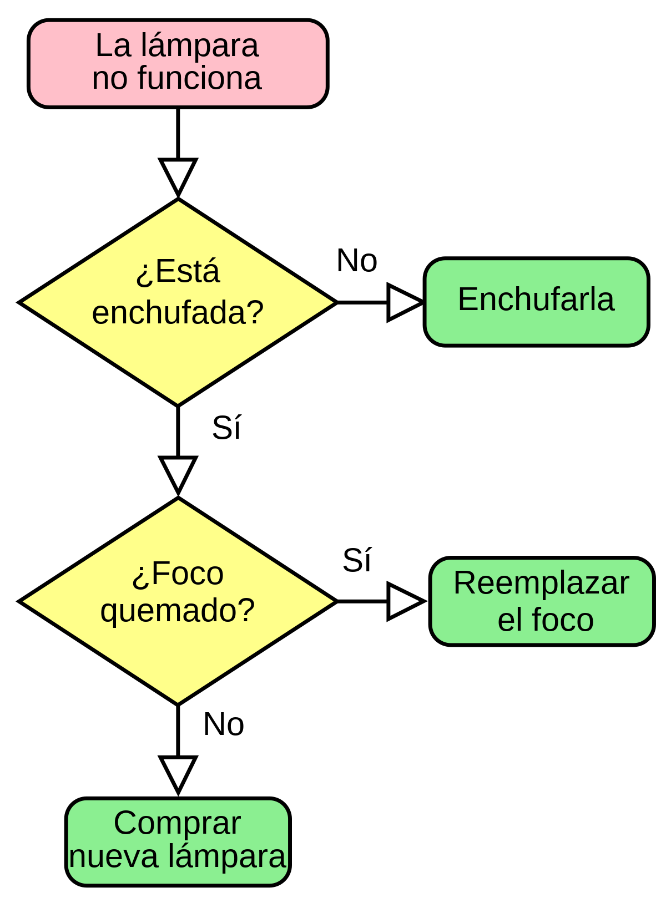

Algoritmos
Leer
En informática, se llaman algoritmos el conjunto de instrucciones sistemáticas y previamente definidas que se utilizan para realizar una determinada tarea. Estas instrucciones están ordenadas y acotadas a manera de pasos a seguir para alcanzar un objetivo.
Todo algoritmo tiene una entrada, conocida como inputy una salida, conocida como output,y entre medias, están las instrucciones o secuencia de pasos a seguir. Estos pasos deben estar ordenados y, sobre todo, deben ser una serie finita de operaciones que permitan conseguir una determinada solución.
En el mundo de la programación, todo programa o sistema operativo funciona a través de algoritmos, escritos en un lenguaje de programación que el ordenador pueda entender para ejecutar los pasos o instrucciones de una forma automatizada. A nivel debig data e inteligencia artificial, los algoritmos analizan la información y datos de consumidores y usuarios finales.
¿Cuáles son las características de los algoritmos?
Independientemente del uso que se le dé a los algoritmos, todos guardan en común las siguientes características:
Inicio y fin: parten de un estado inicial desde el cual ejecutan una serie de instrucciones para llegar a un estado final de salida o finalización.
Exactitud: deben indicar un orden claro, específico y lógico de instrucciones para la ejecución de cada paso, sin que exista espacio para la ambigüedad.
Secuencia: deben seguir una serie de pasos ordenados, entendibles y previamente establecidos.
Completos: deben tener en cuenta todas las posibilidades y presentaciones del problema para ejecutar la solución exacta.
Finitos: el número de pasos para ejecutar la tarea debe ser finito para darla por concluida.
Abstractos: representan una guía o modelo para ordenar procesos.
¿Qué tipos de algoritmos existen?
Según su sistema de signos, es decir, cómo se describen los pasos a seguir, los algoritmos pueden ser:
Cuantitativos y cualitativos: si funcionan a través de cálculos matemáticos o secuencias lógicas.
Computacionales o no computacionales: si requieren o no del uso de un ordenador para la solución o ejecución de una determinada tarea.
